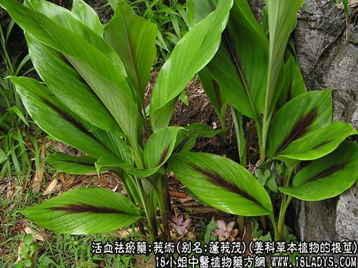

原文出处:本文转载自中药大全网。
原文连接:https://www.daquan.com/post/2010.html
原文连接:https://www.daquan.com/post/2010.html

_莪术的功效与作用1.png)
【中药概述】
莪术，别名：蓬莪茂、蒁药、蓬莪术、广茂、蓬术、青姜、羌七、广术、黑心姜、文术，为姜科草本植物莪术的根茎。苦、辛，温。归肝、脾经。
1．祛瘀通经消症：用于血瘀气结之经闭腹痛、症瘕痞块等，有破血祛瘀、行气止痛的作用，如<三棱丸>、（证治准绳<莪术散>）。
2．行气消积：用于饮食积滞，腹部胀满疼痛，有行气、消积、止痛的作用，如<莪术丸>。
【药物形态】
莪术呈卵圆形、长卵形、圆锥形或长纺锤形，顶端多钝尖，基部钝圆，长2～8cm，直径1.5～4cm。表面灰黄色至灰棕色，上部环节突起，有圆形微凹的须根痕或残留的须根，有的两侧各有1列下陷的芽痕和类圆形的侧生根茎痕，有的可见刀削痕。体重，质坚实，断面灰褐色至蓝褐色，蜡样，常附有灰棕色粉末，皮层与中柱易分离，内皮层环纹棕褐色。气微香，味微苦而辛。广西莪术环节稍突起，断面黄棕色至棕色，常附有淡黄色粉末，内皮层环纹黄白色。温莪术 断面黄棕色至棕褐色，常附有淡黄色至黄棕色粉末。气香或微香。
【药效鉴别】
本品既能破血逐瘀以消症积、通经，又能行气散结以散瘕聚、消积滞，故“治积聚诸气，为最要之药”。“属足厥阴肝经气分药”。并有抗肿瘤作用。
【药理作用】1.有抗肿瘤作用。2.可延长血凝时间。
【化学成分】含挥发油，油中为多种倍半萜类、有莪术酮、莪术双酮、表莪术酮、莪术烯、焦莪术酮、莪术醇、呋喃二烯酮等。
【用量用法】3——10g，水煎服，或入剂。外用适量。
【使用注意】月经过多及孕妇忌。
【附】醋莪术：重在入肝经血分，增强破血消症之效。如<三棱丸>。